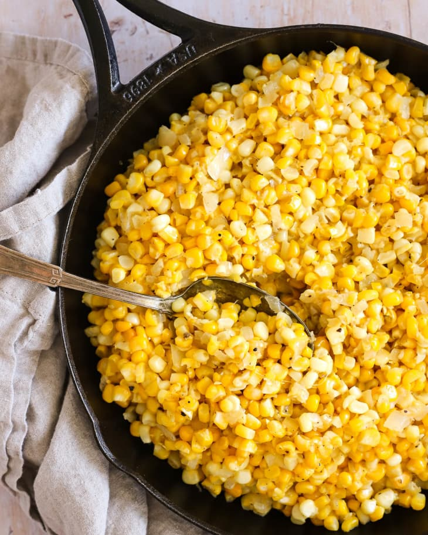

Fried Corn

Fried corn is a quick and easy snack that can be done in less than 6 minutes.
- First wash the corn kernerls.
- Second, heat up the pan and the oil.
- Once the oiul is hot, place the corn and let it fry for 5 minutes.
- Remove corn and salt to taste.